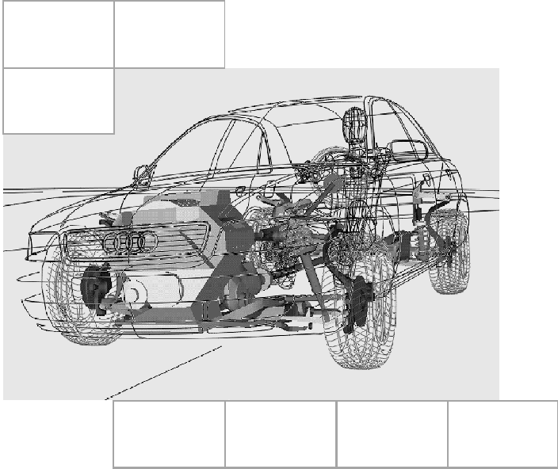
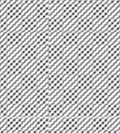
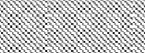

Sicherheitsanforderungen
[redacted-person]
[redacted]
84-52204
[redacted-phone]
[redacted-phone]
[redacted-person] / OE
Hausruf [redacted-phone]
Telefax [redacted]
[redacted-co]

D[redacted]Kindersitzverankerungen ISOFIX Hintersitz
LAH8P0885
Änderungsdokumentation
|
|
|
|---|---|---|
| [redacted-person] |
|
|
| [redacted-person] |
|
|
| [redacted-person] |
|
|
| [redacted-person] |
|
|
| [redacted-person] |
|
|
| [redacted-person] |
|
|
| [redacted-person] |
|
|
| [redacted-person] |
|
|
Inhaltsverzeichnis
[redacted-person] beschreibt Leistungen, Anforderungen sowie Prüf- und Erprobungsbedingungen die das Produkt erfüllen muß.
Zusätzlich zu diesem Lastenheft gelten die Entwicklungsbedingungen [redacted-co]99000.
[redacted-person] des Gesamtfahrzeug-Lastenheftes sind zu beachten. Inhalte dieses Sicherheitslastenheftes dürfen Dritten ohne ausdrückliche Genehmigung durch [redacted-co] nicht zugänglich gemacht werden.
Entwicklung einer Kindersitzbefestigung nach ISO-Norm 13216-1 bzw. ECE- R14.06 für ISOFIX-Kindersitze (für Kinder bis zu einem Gewicht von ca. 20 kg, bzw. bis zu einem Altersbereich von bis ca. 4 Jahre).
ISOFIX-Kindersitz bei [redacted]„Huckepack G1 ISOFIX [redacted-person]“ des [redacted-person] Römer, Ulm
[redacted-person] ist nach ECE-R 44.03 in der Kategorie
„fahrzeugspezifisch“ zuzulassen. Bei entsprechenden neuen Versionen der ECE-R 44 sind die entsprechenden Anforderungen zu erfüllen. Geltende länderspezifische Vorschriften sind zu beachten.
[redacted-person] bzw. Anforderungen sind bei der Entwicklung zu erfüllen. Es gelten jeweils die neuesten Änderungsstände:
ISO 13216-1 ECE-R 44.xx ECE-R 14.xx ECE-R 16.xx
EG 77/541/EWG in der Fassung 2000/3/EG [redacted-person] LAHxxx885x
[redacted-person] der ISOFIX-Verankerungen sowie der zusätzlichen Maßnahmen ist so gering wie möglich auszulegen.
Die ISOFIX-Verankerungen sind nach den Abmessungen und geforderten Ausführungen der ISO-Norm 13216-1 bzw. ECE-R14.06 für die beiden hinteren äußeren Sitzplätze auszulegen.
Durchmesser der Verankerungspunkte 6 mm
seitlicher Abstand der Mittelpunkte der Verankerungspunkte 280 mm
Lage der Verankerungspunkte max. 70 mm hinter dem Referenzpunkt des Kindersitzprüfkörpers (CRF)
Lage der Verankerungspunkte mindestens 120 mm hinter dem R-Punkt des Sitzplatzes
Die geforderten Freiräume um die ISOFIX-Verankerungen müssen gewährleistet sein (EuroNCAP-Anforderungen).
Die ISOFIX-Verankerungen sind im Bezug zum Fahrzeugsitz zu positionieren (Prüfaufbau: Kindersitzprüfkörper (CRF) auf Sitz positioniert und an den ISOFIX-Verankerungen befestigt => Winkelmessung zwischen Bodenfläche CRF und Fahrzeugkoordinatensystem):
Nickwinkel (um Y-Achse): 15° +/- 3°
Rollwinkel (um X-Achse): 0° +/- 5°
Gierwinkel (um Z-Achse): 0° +/- 10°
[redacted-person] beim Nickwinkel kann in Abstimmung mit der Fachabteilung unter bestimmten Randbedingungen erweitert werden.
Für die Prüfung steht der ISO-Normkörper F2 (8P[redacted-phone]A) zur Verfügung.
[redacted-person] dürfen den normalen Sitzkomfort nicht beeinträchtigen. Bei klappbaren Ausführungen der ISOFIX-Verankerungen soll das Bedienelement zum Ausklappen deutlich sichtbar sein. Bei der Montage des Kindersitzes müssen die fahrzeugseitigen Anschlußpunkte sicher ihre Position beibehalten.
[redacted-person] im Sitzpolster sollen deutlich erkennbar sein und durch Kunststofführungen kenntlich gemacht werden, jedoch das Design der Sitzlehne nicht verschlechtern (EuroNCAP-Anforderungen)
[redacted-person] der fahrzeugseitigen Kindersitzverankerungen muß den Anforderungen hinsichtlich Verschleiß und bei sichtbaren Umfängen hinsichtlich Optik den jeweiligen Anforderungen entsprechen.
Empfehlung für [redacted-person]: Oberflächenschutzanforderung nach TL 256 (ohne Index) Ofl-x 650 nach [redacted]
Alternativ: Edelstahl nach EN 1.4302 – X5CrNi 18-10 +1P
Anforderungen nach ECE-R 16.04
[redacted-person] müssen aus recyclefähigem Material gefertigt sein. Kunststoffteile sind sortenrein auszuführen und entsprechend zu
kennzeichnen. Bei der Verwendung verschiedenen Materialien ist eine leichte Trennung zu gewährleisten.
Bei allen Versuchen dieses Abschnittes dürfen keine die Funktion beeinträchtigende Beschädigung der tragenden Struktur auftreten. Weiterhin dürfen Teile weder splittern, brechen noch scharfe Kanten bilden.
kein Ausreißen von Verankerungspunkten
kein verletzungsgefährdender Bruch
Erfüllung aller Bedingungen auch bei Prüfung mit größtmöglichem Sitzgewicht
Es dürfen keine für den Insassen verletzungsgefährdend wirkende Verformungsbilder auftreten.
Alle sicherheitstechnischen Anforderungen nach ECE-R 44 und ISO 13216-1 bzw. ECE-R14.06 sind auch bei 20% Überlast zu erfüllen.
Die statischen Zugversuche an den ISOFIX-Verankerungen sind nach ISO 13216-1 bzw. ECE-R14.06 durchzuführen (Kindersitzprüfgestell S-FAD, entspricht S-FAD 2 in FMVSS 225). [redacted-person] dürfen auch bei 20% Überlast nicht überschritten werden.
Bei einstellbaren Sitzen sind die Zugversuche in der hintersten oberen und der hintersten unteren Sitzstellung durchzuführen.
Die abschließenden Versuche sind in einer Fahrzeugkarosserie durchzuführen.

F1 = F2 = 8,0 kN (ISO 13216 bzw. ECE-R14.06) bzw. 9,6 kN (+ 20%)
Kraft gleichzeitig aufbringen

F3 = F4 = 5,0 kN (ISO 13216 bzw. ECE-R14.06) bzw. 6,0 kN (+20%)
Kraft gleichzeitig aufbringen
F5 = F6 = 5,0 kN (ISO 13216 bzw. ECE-R14.06) bzw. 6,0 kN (+20%)
Kraft gleichzeitig aufbringen
Neben den in der ISO 13216-1 geforderten Zugversuchen, sind bei sitzfesten ISOFIX-Verankerungen auch folgende Zugversuche erforderlich.
Bei einstellbaren Sitzen sind diese Versuche in der hintersten oberen sowie in der hintersten unteren Sitzeinstellung durchzuführen.
|
|
|
|
|---|---|---|---|
|
|
|
|
|
|
|
|
|
|
|
|
|
|
|
|
|
|
|
|
|
|
|
|
[redacted-person] kann nach ersten Simulationsrechnungen sowie ersten Versuchserfahrungen neu mit [redacted-co] abgestimmt werden.
[redacted-person] werden über das Kindersitzprüfgestell S-FAD (Ausführung nach ISO 13216-1 bzw. ECE-R14.06), das an den ISOFIX-Verankerungen befestigt ist, aufgebracht.
[redacted-person] einer Sitzreihe werden gleichzeitig geprüft.
Vor dem eigentlichen Zugversuch ist eine Vorlast von 500 N aufzubringen. [redacted-person] beginnt erst nach der Vorlast.
[redacted-person] (8,0 kN beim Geradzug, bzw. 5,0 kN beim Schrägzug) sind anschließend gleichzeitig und einzeln innerhalb von 2 Sekunden aufzubringen und 0,5 Sekunden zu halten. Anschließend wird innerhalb von 0,5 Sekunden die Kraft um 20% erhöht (9,6 kN beim Geradzug, bzw. 6,0 kN beim Schrägzug), 0,5 Sekunden gehalten und innerhalb von 2 Sekunden entlastet.
Alle testspezifischen Kriterien sind während der Entwicklung und Serienüberprüfung einzuhalten und zu dokumentieren.
[redacted-person] dürfen während der Haltezeit nicht unterschritten werden.
Die maximale Vorverlagerung (horizontal zur Zugrichtung) des Punktes x des Kindersitzprüfgestells S-FAD beträgt 125 mm (dynamisch).
Zugversuch untere und obere Kindersitz-Verankerungen „ISOFIX“ und
„Top-Tether“
F1 = F2 = 8,0 kN (ECE-R14.06) bzw. 9,6 kN (+ 20%)
[redacted-person] werden über das ECE-R14.06-Kindersitzprüfgestell S-FAD (befestigt an den „ISOFIX“-Verankerungen und am „[redacted-person]“- Verankerungspunkt). [redacted-person] einer Sitzreihe werden gleichzeitig geprüft.
Vor dem eigentlichen Zugversuch ist eine Vorlast von 500 N aufzubringen. [redacted-person] beginnt erst nach der Vorlast.
[redacted-person] (8,0 kN) ist anschließend gleichzeitig und einzeln innerhalb von 2 Sekunden aufzubringen und 0,5 Sekunden zu halten. Anschließend wird innerhalb von 0,5 Sekunden die Kraft um 20% erhöht (9,6 kN), 0,5 Sekunden gehalten und innerhalb von 2 Sekunden entlastet.
Alle testspezifischen Kriterien sind während der Entwicklung und Serienüberprüfung einzuhalten und zu dokumentieren.
[redacted-person] dürfen während der Haltezeit nicht unterschritten werden.
Die maximale Vorverlagerung (horizontal zur Zugrichtung) des Punktes x des Kindersitzprüfgestells S-FAD beträgt 125 mm (dynamisch).
Neben den in der ECE-R 44.03 festgelegten Tests sind nachfolgende Prüfungen durchzuführen. Alle testspezifischen Verletzungskriterien sind währen der Entwicklung und Serienüberprüfung einzuhalten und zu dokumentieren.
Testbedingungen:
Aufbau der Versuche in Fahrzeugumgebung (Karosse oder Karossenabschnitt)
Beschleunigungsverlauf siehe Matrix
ISOFIX [redacted-person] 1 „Huckepack G1 ISOFIX Duo“ der Fa. [redacted-person] mit 18 kg schwerem 3-jährigem Dummy
a [g]
[redacted-person] dürfen sich nicht lösen.
Verletzungskriterien (ergänzend zu den Anforderungen in der ECE-R 44.03): Kopf a res 3ms < 60 g
HIC < 600 US-Dummy (800 TNO-Dummy)
Brust a res 3ms < 45 g Brust a z 3 ms < 25 g
Verzögerungsverlauf nach [redacted-person] Kindersitzverankerungen dürfen sich nicht lösen.
a [g]
[redacted-person] dürfen sich nicht lösen.
a [g]
[redacted-person] dürfen sich nicht lösen.
a [g]
[redacted-person] dürfen sich nicht lösen.
Zusatzversuch bei sitzfesten ISOFIX-Kindersitzverankerungen
Prüfbedingungen nach ECE-R 17 (Frontalaufprall mit 50 km/h, Laderaum mit 2 x 18 kg Prüfkörpern)
ISOFIX-Kindersitz mit 3-jährigem Dummy
Es müssen für den Kinderdummy vertretbare Verletzungskriterien eingehalten werden.
[redacted-person] der Fahrzeugsitze dürfen nicht beeinträchtigt werden. [redacted-person] des Kindersitzes muß in allen einstellbaren Positionen des Sitzes (übliche Lehneneinstellungen) möglich sein.
[redacted-person] müssen eine Einhandbedienung ermöglichen.
[redacted-person] klappbarer ISOFIX-Verankerungen muß zwischen –40°C und
+80°C gewährleistet sein.
[redacted-person] von ISOFIX darf nicht zu Komforteinbußen oder zu unangenehmen Geräuschen (z.[redacted-person]) im Fahrbetrieb führen. [redacted-person] muß spielfrei dargestellt werden.
[redacted-person] der klappbaren ISOFIX-Verankerungen muß auch bei einer durch Fertigungstoleranzen bedingten Verspannung in allen Koordinatenrichtungen funktionsfähig sein.
[redacted-person] dürfen die Bedienkräfte um maximal 20% ansteigen.
Entriegeln N Verriegeln N
[redacted-person] werden anhand erster Muster festgelegt.
Dauerlauferprobung ist mit 2000 Zyklen bei Raumtemperatur durchzuführen
=> Kindersitz 2000 x ein- und ausbauen
[redacted-person] bei Riefenbildung < 80 µm i.[redacted-person] Oberfläche beschichtet wie unter 2.5 beschrieben.
Verschleiß- und Funktionserprobung
Beladung: 1.) ISOFIX-Kindersitz aus aktuellem [redacted-co]-Originalzubehör- Programm ohne Beladung
2.) ISOFIX-Kindersitz aus aktuellem [redacted-co]-Originalzubehör- Programm mit Ballastgewicht 18 kg
Laufziel: [redacted-phone]km für alle Bauteile
[redacted-person] des entsprechenden Neuumfangs sind mindestens 3 Fahrzeuge mit 6000 km schadensfrei nachzuweisen.
Weiterlauf dieser Fahrzeuge bis [redacted-phone]km.
Ausnahmen: 50.000 km für AGA für 4 [redacted-person]
60.000 km Klapperfreiheit für Ausstattungsteile sowie Karosserieanbauteile
Es ist eine Dauerlauferprobung mit 5000 Zyklen durchzuführen: 1500 Zyklen bei Raumtemperatur ohne Verschmutzung 1000 Zyklen bei +60°C
1000 Zyklen bei –20°C
1500 Zyklen bei Raumtemperatur mit Verschmutzung (5g Prüfstaub direkt auf bewegliche Teile)
Am ISOFIX-System dürfen keinerlei Beschädigungen auftreten. [redacted-person] muß nach dem Versuch noch funktionsfähig sein. [redacted-person] dürfen sich die Werte der Bedienkräfte um max. 20% erhöhen.